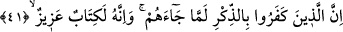

üzere oldukları görünümünü verirler, meşâyih ve ulemânın eserlerine bakarak bir şey
bilmedikleri halde birtakım yaldızlı sözlerle insanları kandırmaya çalışırlar. Âmir ve
yöneticilerden îtibar bekleyip mükâşefe ilmine sahip olduklarını ve daha birtakım
mânevî haller ve vecdler içinde olduklarını iddiâ ederler. Ancak yalan, hîle, iftirâ ve
fâsid niyetleri ve Allah’ın zikrinden gâfil olan kalbî durumları hiç de Allah’a gizli
değildir.
Aynı şekilde bu durum Allah’ın sıddîk ve ârif kullarından da gizli kalmaz. Allah’ın bu
has kulları, Allah’ın nûruyla bakıp insanların kalplerindeki gizli şeyleri görürler.
Bir de sen diğerlerini göreceksin, kıyâmet günü bütün şâhidlerin huzûrunda nasıl da
rezil olacaklar. Yine sen hak ehlinin keskin gözlerle ve âşık kalplerle hakka baktıklarını
görürsün. Tabiî cehennem halkıyla cennet halkı bir olmaz. Elbette Peygamberimiz (s.a.)
bu inkârcı ve bozguncuları beyan etmiş, kendilerini firavunlara, kalplerini de kurtların
kalplerine benzetmiştir.
Peygamberimiz (s.a.) şöyle buyurmuştur: “Ümmetimin içerisinden birtakım kavimler
çıkacak, dilleri ve konuşmaları peygamber dilleri gibi, kalpleri firavunların kalpleri
gibidir.” Başka bir hadis-i şerifte ise; “Kalpleri kurtların kalpleri gibidir, okun
yaydan fırlayıp uzaklaştığı gibi bunlar da süratle dinden çıkıp uzaklaşırlar.
Bilgisizce fetvâ verirler, kendileri de sapar, halkı da saptırırlar.”
Bazıları bu âyetle ilgili olarak şöyle demiştir: Saygısızca bize karşı cüret gösterenler
bilsinler ki bu cüretkârlıkları ve bâtıl dâvâda haddi aşmaları bize gizli değildir. İbn
Atâ bu âyetle ilgili olarak şöyle demiştir: Gerçek dışı yalan dolan ve hezeyanlarla
birtakım iddiâlarda bulunanlar yakında onu nasıl tekzîb ettiğimizi ve bütün hallerde onu
nasıl rezil ve rüsvây ettiğimizi görecektir.
41. Kendilerine Kitap geldiğinde onu inkâr edenler (şüphesiz bunun sonucuna
katlanacaklardır). Halbuki o, eşsiz bir kitaptır.
“Kendilerine Kitap geldiğinde onu inkâr edenler”, Kur’ân onlara geldiğinde ve onu
ilk duyduklarında hiç düşünmeden onu inkâr ettiler. Hak olduğu besbelli iken hiç
düşünmeden ve yorumu bilmeden onu yalanladılar.
Radî şöyle demiştir: Cer sanki mecrûrun harflerinden biri gibi olduğundan dolayı
bedelde lafzî âmillerden yalnız harf-i cer tekrar edilir. Bu âyet, yeni bir cümle olup:
“Âyetlerimizi inkâr edenleri yakında bir ateşe sokacağız” (en-Nisâ’, 4/56)
ifâdesinde olduğu gibi haber mahzûftur. Bu mahzûf haber bir sonraki âyetin sonundaki
“hamîd” lâfzından sonradır. İmâm Kisâî ise; “Bu mahzûf haber, geçmiş haber yerine
kâimdir,” demektedir.
“Hâlbuki o, öyle eşsiz bir kitaptır.” Çok faydalı olup bir benzeri de yoktur. Burada